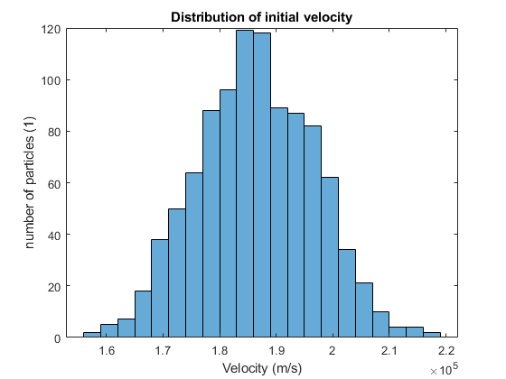
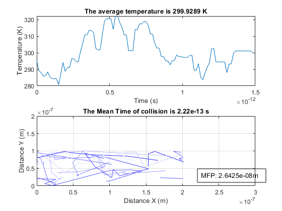

Part2 Collisions with Mean Free Path (MFP)
Histogram, temperature and trajectories are included in plot, MFP and tmn are included in title Q1p3 assign position arrays
close all clearvars kb = 1.3806504e-23; % Boltzmann constant T = 300; % temperature, in Kalvin me = 0.26*9.10938215e-31; % electron mass % with two degree of freedom: 2*1/2kT VThermalMean = sqrt(2*kb*T/me); % thermal velocity dt = 15e-15; i = 100; TStop = 1000 * dt; TTest = 1000; nParticles = 1000; nParticlesPlot = 10; % trace initialization TraceParticlesX = zeros(TStop/dt,nParticles); TraceParticlesY = zeros(TStop/dt,nParticles); % assigning initial positions PositionParticlesX = 200e-9*rand([1,nParticles]); PositionParticlesY = 100e-9*rand([1,nParticles]); %add this to update function later TraceParticlesX(1,:) = PositionParticlesX; TraceParticlesY(1,:) = PositionParticlesY; % assigning initial velocity AngleParticle = 360*rand([1,nParticles]); %1e4 as deviation, thermal velocity as mean VThermal = VThermalMean+1e4.*randn(1,nParticles); figure(1); histogram(VThermal); title('Distribution of initial velocity'); xlabel('Velocity (m/s)'); ylabel('number of particles (1)'); VelocityParticleX = VThermal.*cos(AngleParticle); VelocityParticleY = VThermal.*sin(AngleParticle); % update trace, delete motiplier later on [TraceParticlesX,TraceParticlesY] = traceGen.iterate(i,TraceParticlesX(:,1:nParticlesPlot),TraceParticlesY(:,1:nParticlesPlot),VelocityParticleX(:,1:nParticlesPlot),VelocityParticleY(:,1:nParticlesPlot),dt); % % for R = 1:nParticles % plot(TraceParticlesX(1:TTest,R),TraceParticlesY(1:TTest,R)); % pause(0.1); % hold on; % end xlim([0,300]*1e-9) ylim([0,200]*1e-9) grid on 